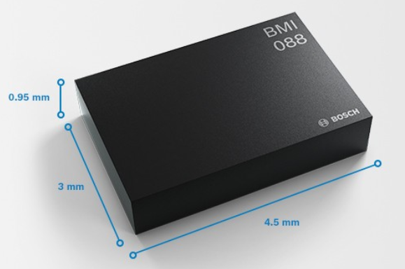
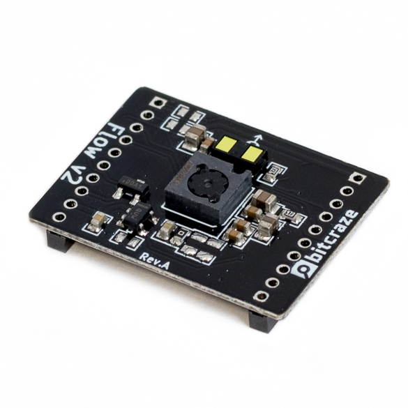
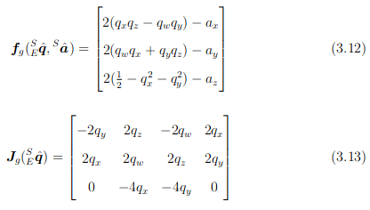
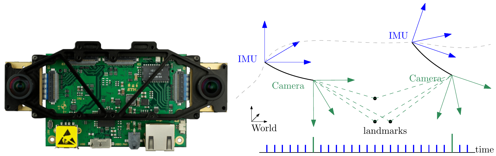

Flying Robots
State Estimation
Wolfgang Hönig
January 10, 2025
Math definitions
% vectors % custom math commands %
State Estimation
Motivation
- Robot’s do not know the current state
- Sensors provide observations \(\mathbf{o}_i\) to be used to predict the state
We have:
- State: \(\mathbf{x}= (\mathbf{p}, \mathbf{v}, \mathbf{R}, \boldsymbol{\omega})^\top \in \mathbb R^3 \times \mathbb R^3 \times SO(3) \times \mathbb R^3\)
- Action: \(\mathbf{u}= (f_1, f_2, f_3, f_4)^\top \in \mathbb R^4\)
State estimation: find a mapping from \(\{\mathbf{o}_i \}_{i=1}^n \mapsto \mathbf{x}\)
Sensors (for Flying Robots)
What sensors do you know? What are the observations?
- Camera
- RGB
- RGBD
- LIDAR
- IMU
- accelerometer
- gyroscope
- magnetometer
- Barometer
- Optical Flow
- Ultrasound
- Time-of-flight, radio signal strength
Inertial Measurement Unit (IMU)
- Bosch BMI088
- 3-axis gyroscope:
- measures \(\mathbf{o}_g = \boldsymbol{\omega}\)
- up to 2000 \(\deg/s\), 16 bit resolution
- 3-axis accelerometer:
- measures \(\mathbf{o}_a = \mathbf{q}^* \odot \dot{\mathbf{v}}\)
- up to 24 G, 16 bit resolution
- Sampling up to 2 kHz
- Power: 18 mW
- Cost: 3 Euro

Height (ToF)
- ST VL53L1x ToF sensor
- 940nm emitter + receiver (\(27\deg\) FoV)
- facing downwards: \(\mathbf{o}_z = \mathbf{p}_z\) (for small \(\mathbf{q}\) w.r.t. FoV)
- Range: up to 4m
- Sampling: 50 Hz
- Power: 40 mW
- Cost: 4 Euro
Downward Optical Flow
- PMW3901 optical flow sensor (similar to optical mice)
- outputs motion in pixels: \(\mathbf{o}_{xy} = [\Delta n_x, \Delta n_y ]^\top\)
\[ \begin{align} \mathbf{v}_m = \mathbf{q}\odot \begin{pmatrix} \frac{\mathbf{p}_z \theta_p}{N_p} \frac{\Delta n_x}{\Delta t}\\ \frac{\mathbf{p}_z \theta_p}{N_p} \frac{\Delta n_y}{\Delta t}\\ 0 \end{pmatrix} \end{align} \]
where \(N_p = 350\), \(\theta_p = 0.71674\), and \(\Delta t\) is the time since last sensor data

Basic Complementary Filter
- Assume we can measure/compute part of the state directly
- Use a convex combination, weighing previous estimate \(\hat{\mathbf{x}}_{t}\) with the new measurement \(\mathbf{x}_m\): \[\begin{align} \hat{\mathbf{x}}_{t+1} = \alpha \hat{\mathbf{x}}_{t} + (1 - \alpha) \mathbf{x}_m,\quad \alpha \in [0,1] \end{align}\]
Multirotor case: \[\begin{align} \mathbf{p}_z &= \alpha_z \mathbf{p}_z + (1 - \alpha_z) \mathbf{o}_z,\quad \alpha_z \in [0,1]\\ \mathbf{v}&= \alpha_{xy} \mathbf{v}+ (1 - \alpha_{xy}) \mathbf{v}_m,\quad \alpha_{xy} \in [0,1] \end{align}\]
where \(\mathbf{o}_z\) is the measurement of the height sensor and \(\mathbf{v}_m\) the (computed) measurement of the flow sensor.
SO(3) Explicit Complementary Filter (ECF) by Mahony (Mahony, Hamel, and Pflimlin 2008; Euston et al. 2008)
measured values are: \(\mathbf{o}_g\) (gyroscope) and \(\mathbf{o}_a\) (accelerometer)
Use \(n(\mathbf{x}) = \frac{\mathbf{x}}{\| \mathbf{x}\|}\), and \(k_p, k_I \in \mathbb R\) tuning gains
Each step, compute: \[ \begin{align} \mathbf{e}&= n(\mathbf{o}_a) \times \left(\mathbf{q}\odot \mathbf{e}_3 \right) & \delta &= k_p \mathbf{e}+ k_I \int \mathbf{e}\\ \dot{\mathbf{q}}_{next} &= \frac{1}{2} \mathbf{q}\otimes \overline{\mathbf{o}_g + \delta} & \mathbf{q}_{next} &= n(\mathbf{q}+ \dot{\mathbf{q}}_{next} \Delta t) \end{align} \]
In words: Define the error as the cross product between measured gravity from the accelerometer and current estimate; use a PI controller to drive the error to zero.
Sample implementation is here
SO(3) Complementary Filter by Madgwick (Madgwick 2014)
- Measured values are: \(\mathbf{o}_g\) (gyroscope) and \(\mathbf{o}_a\) (accelerometer)
- Step 1: Estimate \(\mathbf{q}\)
from \(\mathbf{o}_a\) by solving: \[
\begin{align}
\min_{\mathbf{q}}f(\mathbf{q}, \mathbf{o}_a) = \mathbf{q}^* \odot
\mathbf{e}_3 - \frac{\mathbf{o}_a}{\|\mathbf{o}_a\|_2}
\end{align}
\]
- In words: Find the rotation such that accelerometer frame and world frame align
- Solve by gradient descent
- Step 2: Fuse gyroscope and accelerometer data \[ \begin{align} \dot{\mathbf{q}}_{next} &= \frac{1}{2} \mathbf{q}\otimes \overline{\mathbf{o}_g} - \beta\,n(J(\mathbf{q})^\top f(\mathbf{q}, \mathbf{o}_a))\\ \mathbf{q}_{next} &= n(\mathbf{q}+ \dot{\mathbf{q}}_{next} \Delta t) \end{align} \]
- Sample implementation is here
SO(3) Complementary Filter by Madgwick (Madgwick 2014)
- Efficient implementation needs analytical Jacobian 
Here, \(\mathbf{a}= n(\mathbf{o}_a)\)
- Sympy demo:
filter_madgwick.py
Complementary Filter UAV Summary
- Fuse measurements from different source or prior knowledge (convex combination, control gains, or gradient descent)
- No dynamics model needed
- Very low computational effort
- Few hyperparameters
- Larger \(\alpha\) introduces (significant) delays
- Requires that state is measured/computed directly
- Does not provide an estimate of accuracy of prediction
Background: Kalman Filter (KF) (Thrun, Burgard, and Fox 2005)
- Assume linear system dynamics with Gaussian white noise (process noise \(\mathbf{R}\)): \[ \begin{align} \mathbf{x}_{t+1} = \mathbf{A}\mathbf{x}_t + \mathbf{B}\mathbf{u}_t + \epsilon_t,\quad \epsilon_t \sim \mathcal{N}(0, \mathbf{R}) \end{align} \]
- Assume linear observations with Gaussian white noise (measurement noise \(\mathbf{Q}\)): \[ \begin{align} \mathbf{o}_{t} = \mathbf{C}\mathbf{x}_t + \delta_t,\quad \delta_t \sim \mathcal{N}(0, \mathbf{Q}) \end{align} \]
1D Multirotor
\[ \begin{align} \mathbf{\dot x} = f(\mathbf x, \mathbf u) = \begin{pmatrix} \dot z\\ \frac{f_1}{m} - g \end{pmatrix} \end{align} \]
Background: Kalman Filter (KF) (Thrun, Burgard, and Fox 2005)
1D Multirotor
\[ \begin{align} \mathbf{\dot x} &= f(\mathbf x, \mathbf u) = \begin{pmatrix} \dot z\\ \frac{f_1}{m} - g \end{pmatrix}\\ \mathbf{x}_{t+1} &= \mathbf{x}_t+\dot{\mathbf{x}}_t \Delta t = \begin{pmatrix} z\\ \dot z\end{pmatrix}+\begin{pmatrix} \dot z\\ \frac{f_1}{m} - g \end{pmatrix} \Delta t\\ \mathbf{x}_{t+1} &= \begin{pmatrix}1 & \Delta t \\ 0 & 1 \end{pmatrix} \mathbf{x}_t + \begin{pmatrix}0\\ \frac{\Delta t}{m} \end{pmatrix}\mathbf{u}_t + \begin{pmatrix}0 \\ -g \end{pmatrix}\\ \mathbf{o}_t &= \begin{pmatrix}1 & 0 \end{pmatrix} \mathbf{x}_t \end{align} \]
Background: Kalman Filter (KF) (Thrun, Burgard, and Fox 2005)
Goal: Gaussian estimate of the state, i.e. the mean \(\mu\) and covariance \(\Sigma\).
KF has two parts:
- Prediction step: given the current estimate (\(\hat{\mathbf{x}}_t\) and \(\Sigma_t\)) and action \(\mathbf{u}_t\), compute a new estimate:
\[\begin{align} \hat{\mathbf{x}}_{t+1} &= \mathbf{A}\hat{\mathbf{x}}_t + \mathbf{B}\mathbf{u}_t\\ \Sigma_{t+1} &= \mathbf{A}\Sigma_t \mathbf{A}^\top + \mathbf{R} \end{align}\]
- Measurement update: given the current estimate (\(\hat{\mathbf{x}}_t\) and \(\Sigma_t\)) and measurement \(\mathbf{o}_t\), compute a new estimate:
\[\begin{align} \mathbf{K}&= \Sigma_t \mathbf{C}^\top \left(\mathbf{C}\Sigma_t \mathbf{C}^\top + \mathbf{Q}\right)^{-1}\\ \hat{\mathbf{x}}_{t+1} &= \hat{\mathbf{x}}_t + \mathbf{K}(\mathbf{o}_t - \mathbf{C}\hat{\mathbf{x}}_t)\\ \Sigma_{t+1} &= (\mathbf{I}- \mathbf{K}\mathbf{C}) \Sigma_t \end{align}\]
Background: Kalman Filter (KF) (Thrun, Burgard, and Fox 2005)
- Optimal (least square) for the given system assumptions
- Computes uncertainty as well
- Strong assumptions do not reflect real systems (linear dynamics/measurements, Gaussian white noise)
- Computational effort: Kalman gain requires matrix inversion of potentially large matrix
Background: Extended Kalman Filter (EKF) (Thrun, Burgard, and Fox 2005)
- Generalize system dynamics and measurement model to: \[ \begin{align} \mathbf{x}_{t+1} &= g(\mathbf{x}_t, \mathbf{u}_t) + \epsilon_t,\quad \epsilon_t \sim \mathcal{N}(0, \mathbf{R})\\ \mathbf{z}_{t} &= h(\mathbf{x}_t) + \delta_t,\quad \delta_t \sim \mathcal{N}(0, \mathbf{Q}) \end{align} \]
How could one apply KF here?
- Key idea: linearize using first-order Taylor around prior estimate; then use KF
Background: Extended Kalman Filter (EKF) (Thrun, Burgard, and Fox 2005)
- Prediction step: \[ \begin{align} \hat{\mathbf{x}}_{t+1} &= g(\hat{\mathbf{x}}_t, \mathbf{u}_t)\\ \mathbf{G}&= \frac{\partial g(\mathbf{x}, \mathbf{u})}{\partial \mathbf{x}} \vert_{\mathbf{x}=\hat{\mathbf{x}}_t, \mathbf{u}=\mathbf{u}_t}\\ \Sigma_{t+1} &= \mathbf{G}\Sigma_t \mathbf{G}^\top + \mathbf{R} \end{align} \]
- Measurement update: \[ \begin{align} \mathbf{H}&= \frac{\partial h(\mathbf{x})}{\partial \mathbf{x}} \vert_{\mathbf{x}=\hat{\mathbf{x}}_t}\\ \mathbf{K}&= \Sigma_t \mathbf{H}^\top \left(\mathbf{H}\Sigma_t \mathbf{H}^\top + \mathbf{Q}\right)^{-1}\\ \hat{\mathbf{x}}_{t+1} &= \hat{\mathbf{x}}_t + \mathbf{K}(\mathbf{o}_t - h(\hat{\mathbf{x}}_t))\\ \Sigma_{t+1} &= (\mathbf{I}- \mathbf{K}\mathbf{H}) \Sigma_t \end{align} \]
Background: Extended Kalman Filter (EKF) (Thrun, Burgard, and Fox 2005)
- Dynamics: \[ \begin{align} \mathbf{\dot x} = f(\mathbf x, \mathbf u) = \begin{pmatrix} \dot x\\ \frac{-(f_1 + f_2) \sin \theta}{m}\\ \dot z\\ \frac{(f_1 + f_2) \cos \theta}{m} - g\\ \dot \theta\\ \frac{(f_2 - f_1) l}{\mathbf J_{yy}} \end{pmatrix} \end{align} \]

Sympy demo: ekf.py
Background: Extended Kalman Filter (EKF) (Thrun, Burgard, and Fox 2005)
- Works for arbitrary (smooth) dynamics
- Computes uncertainty as well
- “Optimal”
- Linearization only correct, if \(\hat{\mathbf{x}}\) is correct
- Unclear how to handle SO(2) and SO(3) correctly
SO(3) Multiplicative Extended Kalman Filter (MEKF) (Markley 2003; Hall, Knoebel, and McLain 2008; Mueller, Hamer, and D’Andrea 2015)
- Split SO(3) state \(\mathbf{q}\) in error angle part (\(\boldsymbol{\delta}\in \mathbb R^3\)) and external absolute orientation part (\(\mathbf{q}_{ref}\))
\[ \begin{align} \mathbf{q}&= \mathbf{q}_{ref} \otimes \mathbf{q}(\boldsymbol{\delta}) \\ \mathbf{q}(\boldsymbol{\delta}) &= \begin{pmatrix} \cos(\| \boldsymbol{\delta}\| /2)\\ \frac{\boldsymbol{\delta}}{\| \boldsymbol{\delta}\|} \sin (\| \boldsymbol{\delta}\| /2) \end{pmatrix} \approx \begin{pmatrix} 1.0 - \| \boldsymbol{\delta}\|^2 / 8\\ \boldsymbol{\delta}/2 \end{pmatrix} \end{align} \]
- The filter state only contains \(\boldsymbol{\delta}\); \(\mathbf{q}_{ref}\) is treated as constant
- Add reset step, that recomputes \(\mathbf{q}_{ref}\)
The name comes from quaternion multiplication \(\otimes\). Others refer to it as “indirect EKF” (Trawny and Roumeliotis 2005)
SO(3) MEKF Prediction Step
- State: \(\mathbf{x}= [ \mathbf{p},
\mathbf{b}, \boldsymbol{\delta}]^\top \in \mathbb R^9\) (and
\(\mathbf{q}_{ref}\) outside the
filter)
- \(\boldsymbol{\omega}\) can be directly observed and often remains not part of the EKF
- \(\mathbf{b}\) is velocity in body frame (\(\mathbf{v}= \mathbf{q}\odot \mathbf{b}\)) (will simplify some math later!)
- Action: \(\mathbf{u}= [ \mathbf{o}_g, \mathbf{o}_a ]^\top\) (i.e., gyroscope and accelerometer are “actions” not measurements)
- Dynamics (step) \(\hat{\mathbf{x}}_{t+1} = g(\hat{\mathbf{x}}_t, \mathbf{u}_t)\): \[ \begin{align} \hat{\mathbf{p}}_{t+1} &= \hat{\mathbf{p}}_t + ((\mathbf{q}_{ref} \otimes \mathbf{q}(\hat{\boldsymbol{\delta}}_{t})) \odot \hat{\mathbf{b}}_t) \Delta t\\ \hat{\mathbf{b}}_{t+1} &= \hat{\mathbf{b}}_t + \left( (\mathbf{q}_{ref} \otimes \mathbf{q}(\hat{\boldsymbol{\delta}}_{t}))^* \odot \mathbf{g}+ \mathbf{o}_a \right) \Delta t\\ \hat{\boldsymbol{\delta}}_{t+1} &= \hat{\boldsymbol{\delta}}_{t} + \mathbf{o}_g \Delta t \end{align} \]
SO(3) MEKF Prediction Step
Benefits of using IMU as actions rather than measurements?
- True motor forces/torques can often not be measured in-flight
- \(\mathbf{o}_a \neq h(\mathbf{x})\)
SO(3) MEKF Prediction Step
\[ \begin{align} \hat{\mathbf{x}}_{t+1} &= g(\hat{\mathbf{x}}_t, \mathbf{u}_t)\\ \mathbf{G}&= \frac{\partial g(\mathbf{x}, \mathbf{u})}{\partial \mathbf{x}} \vert_{\mathbf{x}=\hat{\mathbf{x}}_t, \mathbf{u}=\mathbf{u}_t}\\ \Sigma_{t+1} &= \mathbf{G}\Sigma_t \mathbf{G}^\top + \mathbf{R} \end{align} \]
\(G\) can be computed analytically or by numerical approximation:
\[\begin{align} G \approx \begin{pmatrix} \frac{\partial g_1(\mathbf{x}, \mathbf{u})}{\partial \mathbf{x}_1} & \ldots & \frac{\partial g_1(\mathbf{x}, \mathbf{u})}{\partial \mathbf{x}_N}\\ \vdots & \ldots & \vdots\\ \frac{\partial g_N(\mathbf{x}, \mathbf{u})}{\partial \mathbf{x}_1} & \ldots & \frac{\partial g_N(\mathbf{x}, \mathbf{u})}{\partial \mathbf{x}_N} \end{pmatrix} \end{align}\]
\(G\) becomes an easy expression, if
just using \(\mathbf{q}_{ref}\). (Demo:
mekf.py)
SO(3) MEKF Reset Step
\[ \begin{align} \mathbf{q}_{ref} &= \mathbf{q}_{ref} \otimes \mathbf{q}(\boldsymbol{\delta}) \\ \boldsymbol{\delta}&= \mathbf{0} \end{align} \]
Optional: rotate \(\Sigma\) (Mueller, Hehn, and D’Andrea 2017)
Measurement Equation for Height
- \(\mathbf{o}_z = h(\mathbf{x}) = \mathbf{p}_z\) (for small \(\mathbf{q}\) w.r.t. FoV)
\[ \begin{align} \mathbf{H}&= \frac{\partial h(\mathbf{x})}{\partial \mathbf{x}} \vert_{\mathbf{x}=\hat{\mathbf{x}}_t}\\ &= \begin{pmatrix} 0 & 0 & 1 & 0 & 0 & 0 & 0 & 0 & 0 \end{pmatrix} \end{align} \]
\[ \begin{align} \mathbf{K}&= \Sigma_t \mathbf{H}^\top \left(\mathbf{H}\Sigma_t \mathbf{H}^\top + \mathbf{Q}\right)^{-1}\\ \hat{\mathbf{x}}_{t+1} &= \hat{\mathbf{x}}_t + \mathbf{K}(\mathbf{o}_z - h(\hat{\mathbf{x}}_t))\\ \Sigma_{t+1} &= (\mathbf{I}- \mathbf{K}\mathbf{H}) \Sigma_t \end{align} \]
sympy demo: mekf_measurement_height.py
Measurement Equation for Flow
- outputs motion in pixels: \(\mathbf{o}_{xy} = [\Delta n_x, \Delta n_y ]^\top\)
\[ \begin{align} \mathbf{v}_m = \mathbf{q}\odot \begin{pmatrix} \frac{\mathbf{p}_z \theta_p}{N_p} \frac{\Delta n_x}{\Delta t}\\ \frac{\mathbf{p}_z \theta_p}{N_p} \frac{\Delta n_y}{\Delta t}\\ 0 \end{pmatrix} \end{align} \]
- \(\mathbf{o}_{xy} = [\Delta n_x, \Delta n_y ]^\top = h(\mathbf{x}) = \left( \frac{\Delta t N_p}{\mathbf{p}_z \theta_{p}} \left( (\mathbf{q}(\boldsymbol{\delta}) \otimes \mathbf{q}_{ref})^* \odot \mathbf{v}\right) \right)_{xy}\)
If the filter tracks the velocity in body frame, this becomes much simpler.
Measurement Equation for Flow
- \(\mathbf{o}_{xy} = [\Delta n_x, \Delta n_y ]^\top; h(\mathbf{x}) = \frac{\Delta t N_p}{\mathbf{p}_z \theta_{p}} \begin{pmatrix} \mathbf{b}_x\\\mathbf{b}_y\end{pmatrix}\)
\[ \begin{align} \mathbf{H}&= \frac{\partial h(\mathbf{x})}{\partial \mathbf{x}} \vert_{\mathbf{x}=\hat{\mathbf{x}}_t}\\ &= \begin{pmatrix} 0 & 0 & \frac{-N_p \mathbf{b}_x \Delta t}{\mathbf{p}_z^2 \theta_p} & \frac{N_p \Delta t}{\mathbf{p}_z \theta} & 0 & 0 & 0 & 0 & 0\\ 0 & 0 & \frac{-N_p \mathbf{b}_y \Delta t}{\mathbf{p}_z^2 \theta_p} & 0 & \frac{N_p \Delta t}{\mathbf{p}_z \theta} & 0 & 0 & 0 & 0 \end{pmatrix} \end{align} \]
\[ \begin{align} \mathbf{K}&= \Sigma_t \mathbf{H}^\top \left(\mathbf{H}\Sigma_t \mathbf{H}^\top + \mathbf{Q}\right)^{-1}\\ \hat{\mathbf{x}}_{t+1} &= \hat{\mathbf{x}}_t + \mathbf{K}(\mathbf{o}_{xy} - h(\hat{\mathbf{x}}_t))\\ \Sigma_{t+1} &= (\mathbf{I}- \mathbf{K}\mathbf{H}) \Sigma_t \end{align} \]
sympy demo: mekf_measurement_flow.py
Large Matrices (and Embedded Systems)
- Matrix inversions are slow (roughly cubic)
- We have \(\left(\mathbf{H}\Sigma_t
\mathbf{H}^\top + \mathbf{Q}\right)^{-1}\)
- If \(\mathbf{H}\) has one row, the inversion becomes a division
Scalar Update
Apply measurement update for each row of \(\mathbf{H}\) separately. (Justification: the measurement was taken at different times).
Works well in practice, but only for highly observable systems.
MEKF Summary (1)
Initialize state \(\hat{\mathbf{x}}\), covariance \(\Sigma\)
On IMU update
- Reset: \[ \begin{align} \mathbf{q}_{ref} &= \mathbf{q}_{ref} \otimes \mathbf{q}(\hat{\boldsymbol{\delta}}) \\ \boldsymbol{\delta}&= \mathbf{0} \end{align} \]
- Convert \(\mathbf{b}\) to \(\mathbf{v}\)
- Predict \[ \begin{align} \hat{\mathbf{x}}_{t+1} &= g(\hat{\mathbf{x}}_t, \mathbf{u}_t)\\ \mathbf{G}&= \frac{\partial g(\mathbf{x}, \mathbf{u})}{\partial \mathbf{x}} \vert_{\mathbf{x}=\hat{\mathbf{x}}_t, \mathbf{u}=\mathbf{u}_t}\\ \Sigma_{t+1} &= \mathbf{G}\Sigma_t \mathbf{G}^\top + \mathbf{R} \end{align} \]
MEKF Summary (2)
- On Measurement update
\[ \begin{align} \mathbf{H}&= \frac{\partial h(\mathbf{x})}{\partial \mathbf{x}} \vert_{\mathbf{x}=\hat{\mathbf{x}}_t}\\ \mathbf{K}&= \Sigma_t \mathbf{H}^\top \left(\mathbf{H}\Sigma_t \mathbf{H}^\top + \mathbf{Q}\right)^{-1}\\ \hat{\mathbf{x}}_{t+1} &= \hat{\mathbf{x}}_t + \mathbf{K}(\mathbf{o}_z - h(\hat{\mathbf{x}}_t))\\ \Sigma_{t+1} &= (\mathbf{I}- \mathbf{K}\mathbf{H}) \Sigma_t \end{align} \]
- State of the art filter (used in PX4, Crazyflie, etc.)
- Computationally heavy
- Difficult to tune (and implement)
Advanced Topics
Unscented Kalman Filter (UKF) (Thrun, Burgard, and Fox 2005)
- Linearization using statistical linear regression
- derivative-free
- more computation (factor, not complexity)
“In many practical applications, the difference between EKF and UKF is negligible.” (Probabilstic Robotics, page 70)
Other Sensors
- Global Navigation System (e.g., GPS)
- Measure directly absolute position \(\mathbf{p}\), easy to integrate
- Ultra-wideband ranging
- Measure distance to known anchors, or other robots
- Often used for indoor drone shows (e.g., Verity Studios)
- Can be used for formation flight of multiple drones
- Lighthouse (HTC Vive)
- Basestations (at known position) have a rotating laser (at known frequency)
- Receivers can essentially use triangulation


Visual-Inertial Odomotry (VIO) (Scaramuzza and Zhang 2020)

- Predict motion using IMU (integration)
- Predict motion using camera (typically using keypoints)
- Variants and more details in (Scaramuzza and Zhang 2020)
State Estimation in the Crazyflie Firmware
Assignment 3
Task
Implement the MEKF. Validate offline using the provided logging data and compare with the on-board EKF. Execute a physical test flight and qualitatively compare to the on-board EKF.
Variants:
- Implement one of the complementary filters instead in simulation and physical flight (up to 15/20 points).
- MEKF in simulation, complementary on-board (up to 18/20 points).
Simulation
- Given is a dataset of “our” figure-8 flight
- reference estimate of the on-board EKF (\(\mathbf{p}, \mathbf{v}, \mathbf{q}\) over time)
- Gyroscope over time (\(\mathbf{o}_g\) in deg/s !)
- Accelerometer over time (\(\mathbf{o}_a\) in Gs !)
- Height over time (\(\mathbf{o}_z\) in mm)
- Flow over time (\(\Delta n_x, \Delta n_y\)) (needs to be swapped, flipped, done in conversion script)
- Given is a conversion script for *.csv (show example)
- Read the csv line-by-line
- collect data that you need simultanously (e.g., gyroscope and accelerometer)
- then call the appropriate function (e.g., mekf_predict)
- write your output to a file, plot with e.g., Python
Physical Flight
- Sufficient to show it hover, using an existing (non-Rust) controller
- Approach:
- In
app-config, addCONFIG_ESTIMATOR_OOT=y - In
lib.rsaddestimatorOutOfTreeInit,estimatorOutOfTreeTest, andestimatorOutOfTree - In the state estimator, use the following to loop over measurements
let mut measurement = measurement_t { type_: 255, data: bindings::measurement_t__bindgen_ty_1 { gyroscope: bindings::gyroscopeMeasurement_t { gyro: bindings::Axis3f { axis: [0.0, 0.0, 0.0], }}}}; loop { unsafe { let ok = estimatorDequeue(&mut measurement); if !ok { break } let mut t = measurement.type_ & 0xFF; // the & 0xFF is important - In
Rust
- The MEKF requires different matrix sizes; Use generics to avoid code duplication
pub struct Mat<const Rows: usize, const Columns: usize> {
pub m: [[f32; Columns]; Rows],
}
// Rows1xColumns1 X Rows2 x Columns2
// where columns1 == rows2
impl<const R1: usize, const C1: usize,
const R2: usize, const C2: usize>
Mul<Mat<R2, C2>> for Mat<R1, C1> {
type Output = Mat<R1, C2>;
fn mul(self, other: Mat<R2, C2>) -> Mat<R1, C2> {
// ...
}
}Timeline
- Jan 17: discussion/simulation presentation
- Jan 24: flight tests (no class meeting)
- Jan 31: Motion Planning lecture (& Assignment 4)
Conclusion
Learned Today
- State Estimation to estimate \(\mathbf{x}\) (and uncertainty)
- Complementary Filter: simple, efficient, no dynamics model
- Multiplicative Extended Kalman Filter: state-of-the-art state estimator for flying robots
- Assignment 3
Questions
?